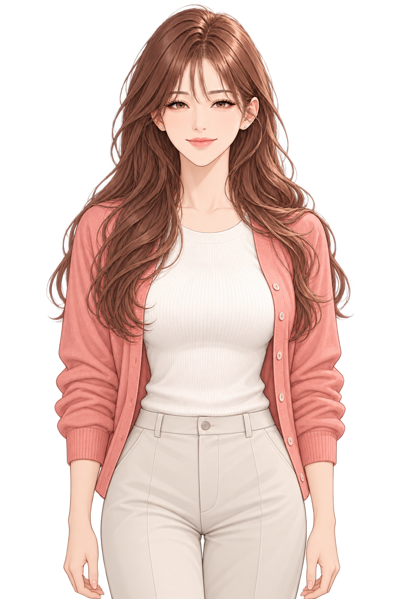

이서 · 윤 팀장 눈매 비교
서안과 나리는 기존 외형 고정. 이서와 윤 팀장의 눈매·눈썹을 소폭 조정했습니다.
이서
가로로 길고 차분한 눈매, 낮은 눈꺼풀 선과 부드러운 일자 눈썹.
윤 팀장
선명하게 올라간 눈꼬리와 조금 더 직선적인 눈썹.
외형 고정
아래 두 사람은 원본 리소스를 그대로 사용합니다.
 서안
서안
나리생성 방식: 내장 image_gen. 원본과 새 리소스는 별도로 보관했습니다. 타이틀은 기존 단체 원본에 이서·윤 팀장 눈 주변만 겹쳐 다른 두 인물을 보존합니다.